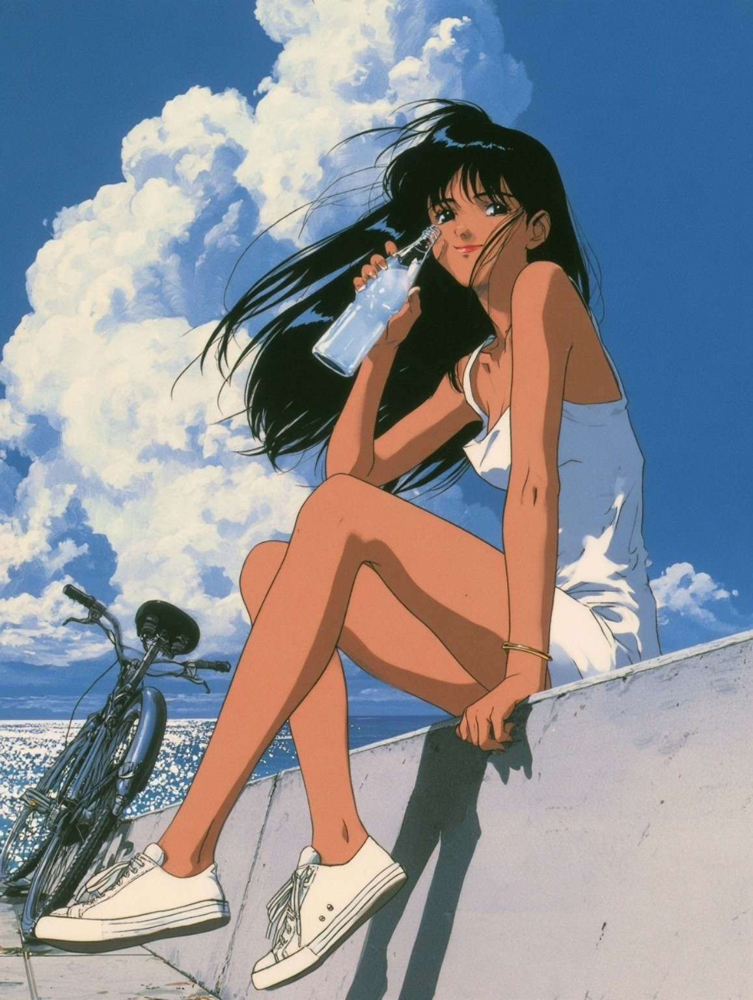
카세트 라벨3 sheets
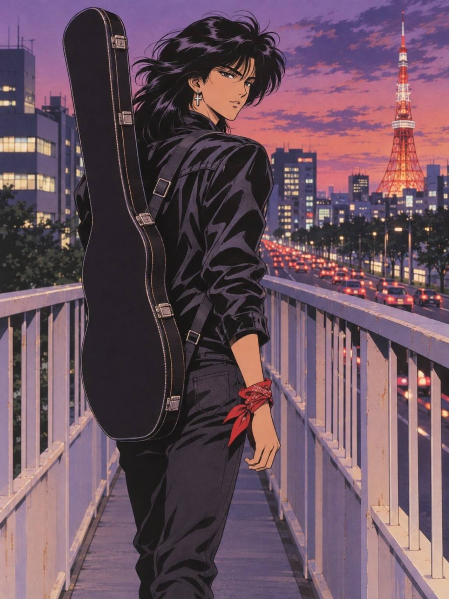
Contents
Four years ahead,도쿄
미래 출장은 두 번째다. 지난번에는 9년 뒤의 서울에 갔고, 이번에는 4년 뒤의 도쿄에 갔다. 1989년의 이 도시는 밤이 낮보다 밝다.
여자들은 머리를 한 길이로 길게 자르고 몸에 붙는 원피스를 입는다. 남자들은 품이 큰 수트를 입거나, 그 수트가 싫어서 팀 점퍼에 청바지를 입는다.
옷만 보고 오지는 않았다. 도쿄의 잡지에는 화보 사이에 코너가 많다. 물건 카탈로그, 옷 한 벌 돌려 입기, 헤어 카탈로그, 별자리 운세, 오려 쓰는 부록. 이번 호에 전부 따라 해 보았다.
옷을 보러 갔다가,
잡지 만드는 법을 배워 왔다.
— ÉPOQUE 편집부, 1985년 서울
다섯 장면 — 초롱 골목에서 라멘 포장마차까지
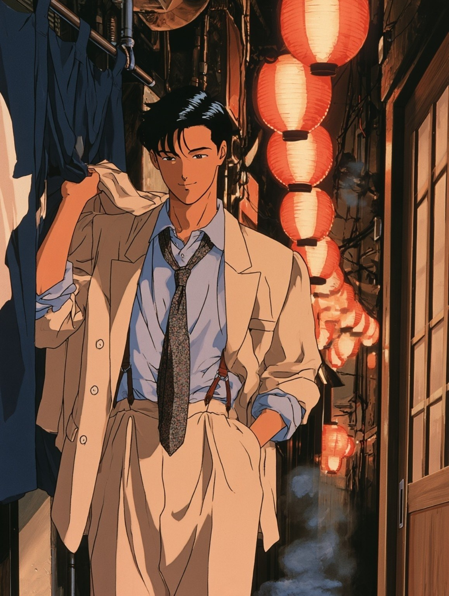
노렌을 걷고 나오다
가게 문에 건 천을 한 손으로 걷고 그가 나온다. 재킷은 벗어 어깨에 걸쳤고, 타이는 반쯤 풀었다. 등 뒤로 붉은 초롱이 줄지어 켜져 있다.
이 도시의 회사원은 품이 크고 어깨가 둥근 수트를 입는다. 소프트 수트라고 부른다. 바지는 주름을 깊게 잡고 멜빵으로 올려 입는다.
- SUIT
- 베이지 소프트 수트
- SHIRT
- 소매를 걷은 하늘색 셔츠
- TIE
- 느슨하게 푼 무늬 타이
- EXTRAS
- 갈색 멜빵
자판기 불빛 아래
비에 젖은 바닥에 자판기 불빛이 비친다. 그는 그 앞에 쪼그려 앉아 캔 하나를 들고 있다. 뒤에는 흰 스쿠터를 세워 두었다.
남색 몸판에 흰 소매를 단 팀 점퍼, 줄무늬 폴로셔츠, 일자 청바지. 수트를 입지 않는 도쿄 학생들의 차림이다. 신발은 갈색 가죽 부츠다.
- JACKET
- 남색·흰색 팀 점퍼
- TOP
- 줄무늬 폴로셔츠
- JEANS
- 일자 청바지
- SHOES
- 갈색 가죽 부츠
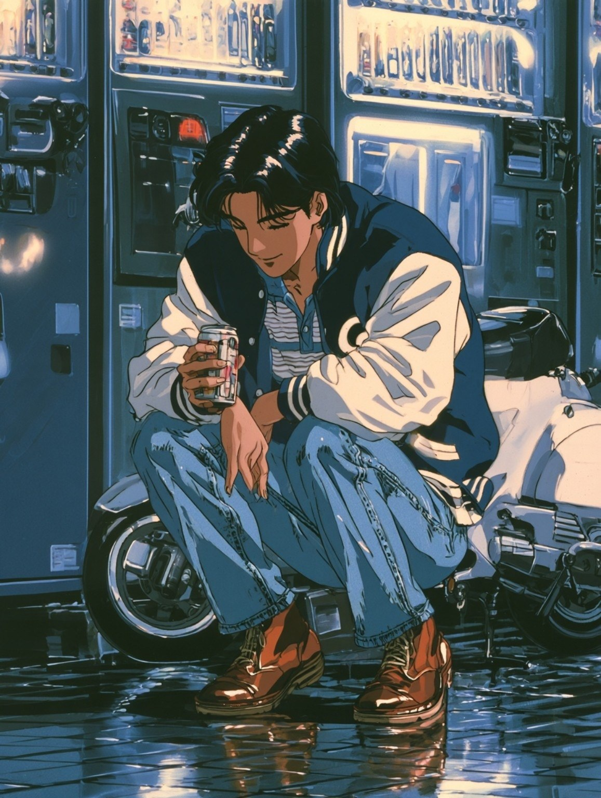
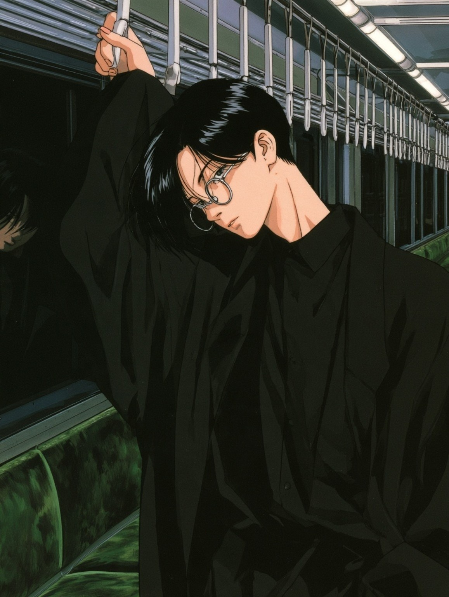
손잡이에 기댄 올블랙
막차에 가까운 전철 칸은 비어 있다. 흰 손잡이가 줄지어 흔들리고, 긴 의자는 초록 벨벳이다. 그는 손잡이를 잡은 팔에 머리를 기댔다.
재킷도 셔츠도 검다. 재킷은 품이 아주 크고, 셔츠는 목까지 채웠다. 디자이너 브랜드를 입는 사람들은 이렇게 위아래를 한 색으로 맞춘다. 안경은 가는 은테다.
- JACKET
- 검은 오버사이즈 재킷
- SHIRT
- 목까지 채운 검은 셔츠
- GLASSES
- 가는 은테 둥근 안경
- HAIR
- 한쪽 눈을 덮는 앞머리
초록 전차가 지나가면
바다 바로 옆으로 철길이 지나간다. 초록색 작은 전차가 건널목을 지나고, 그 너머로 섬이 보인다. 그는 서프보드를 옆에 끼고 차단기가 올라가기를 기다린다.
하늘색 알로하 셔츠는 단추를 채우지 않았다. 안에는 흰 민소매, 아래는 같은 하늘색 바지. 목에는 조개 목걸이를 걸었다. 머리는 햇볕에 갈색으로 바랬다.
- SHIRT
- 단추를 푼 하늘색 알로하 셔츠
- TOP
- 흰 민소매
- BOTTOM
- 끈으로 묶는 하늘색 바지
- NECKLACE
- 조개 목걸이
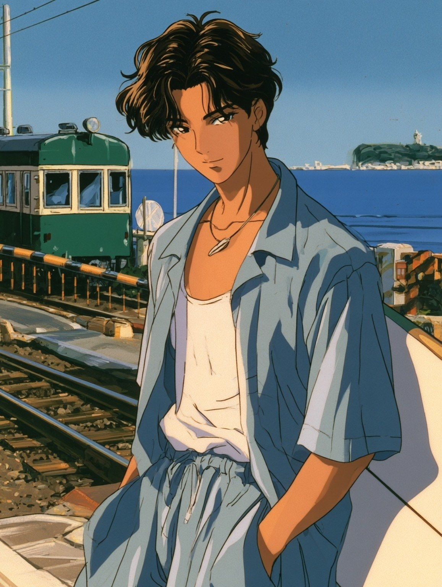
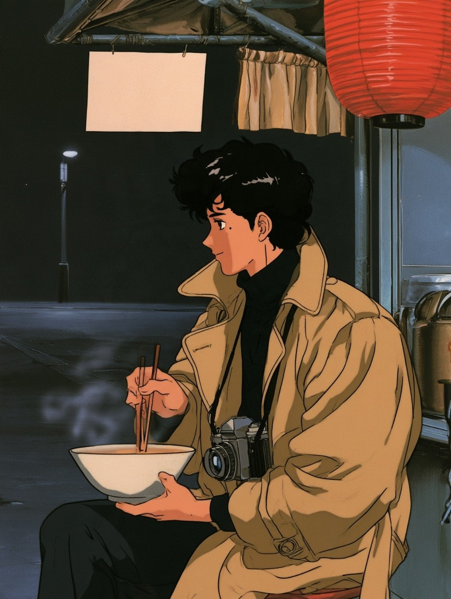
트렌치코트와 라멘 한 그릇
포장마차 지붕 아래 붉은 초롱 하나가 켜져 있다. 그는 걸상에 앉아 그릇을 들고, 젓가락을 든 채 고개를 돌린다. 김이 올라온다.
카키색 트렌치코트는 깃을 세웠고, 안에는 검은 터틀넥을 입었다. 목에는 낡은 필름 카메라를 걸었다. 머리는 짧은 곱슬이다.
- COAT
- 깃을 세운 카키 트렌치코트
- TOP
- 검은 터틀넥
- CAMERA
- 목에 건 필름 카메라
- HAIR
- 짧은 곱슬머리
1989
이날은 그해 주식시장이 마지막으로 열린 날이었다. 닛케이 평균주가는 3만 8915엔 87전으로 장을 마쳤다. 그때까지 가장 높은 값이었다.
이듬해 마지막 거래일의 값은 2만 3848엔 71전. 한 해 사이에 약 39퍼센트가 빠졌다. 이번 호의 도쿄는 그 꼭대기 바로 앞의 여름이다.
그 무렵
도쿄에서는
- 1983이 무렵 디자이너 브랜드 붐이 시작됨
- 1989.1.8연호가 헤이세이로 바뀜
- 1989.12.29닛케이 평균주가 사상 최고치
- 1990주가가 한 해 동안 약 39% 하락
세 장면 — 시부야에서 킷사텐까지
시부야에서 만난 세 사람
일요일 오후의 시부야. 쇼핑백을 든 세 사람을 세웠다. 셋 다 스무 살 안팎이고, 셋 다 미국 대학생처럼 입었다.
이 차림을 시부야 캐주얼, 줄여서 시부카지라고 부른다. 디자이너 브랜드에 싫증 난 도쿄의 학생들이 팀 점퍼를 맞춰 입고 시부야에 모이면서 시작됐다.
- LEFT
- 남색·흰색 팀 점퍼, 일자 청바지, 흰 운동화
- CENTER
- 금단추 남색 재킷, 흰 타이트스커트
- RIGHT
- 줄무늬 럭비 셔츠, 치노 바지, 갈색 로퍼
- IN HAND
- 흰 쇼핑백
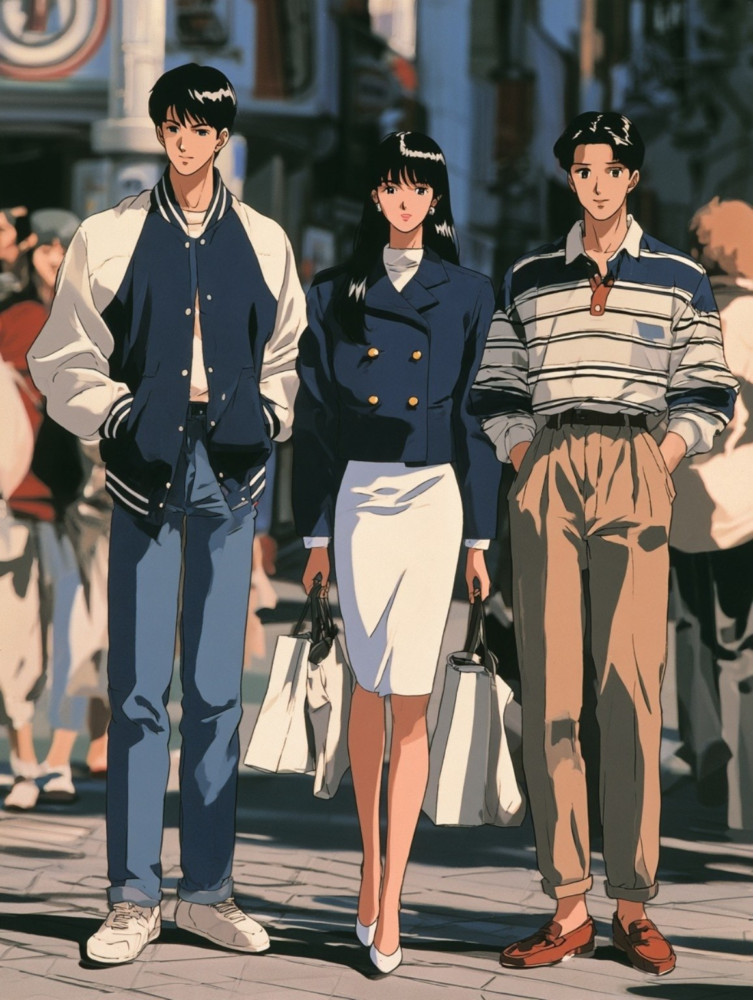
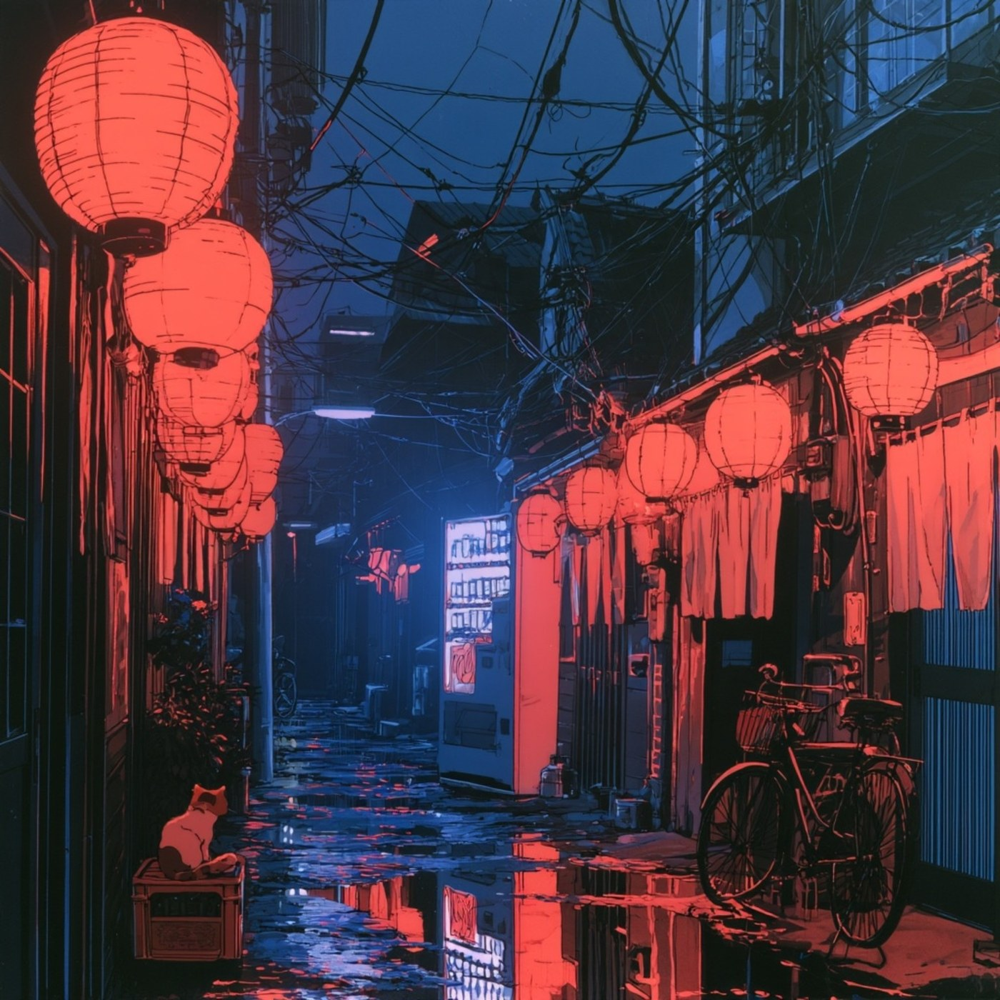
붉은 초롱이 켜지면
큰길에서 한 칸만 들어가면 골목이다. 붉은 종이 초롱이 줄지어 켜지고, 가게마다 문에 짧은 천을 걸었다. 머리 위로는 전선이 얽혀 있다.
비가 그친 바닥에 초롱 빛이 그대로 비친다. 자판기 하나가 혼자 하얗게 밝고, 맥주 상자 위에 고양이가 앉아 있다.
- LIGHT
- 붉은 종이 초롱
- DOOR
- 가게 문에 건 짧은 천, 노렌
- ON THE STREET
- 자판기, 자전거, 맥주 상자
- RESIDENT
- 고양이 한 마리
초록 소다와 빨간 스파게티
킷사텐은 오래된 찻집이다. 스테인드글라스 등 아래 낮은 탁자가 있고, 의자는 붉은 벨벳이다.
초록색 멜론 소다에는 아이스크림과 체리를 올린다. 스파게티는 케첩으로 볶아 피망을 넣는다. 두꺼운 토스트와 커피까지 놓으면 탁자가 찬다.
- DRINK
- 아이스크림을 올린 멜론 크림소다
- PLATE
- 케첩으로 볶은 스파게티
- SWEET
- 유리잔에 담은 파르페
- SIDE
- 버터를 바른 두꺼운 토스트, 커피
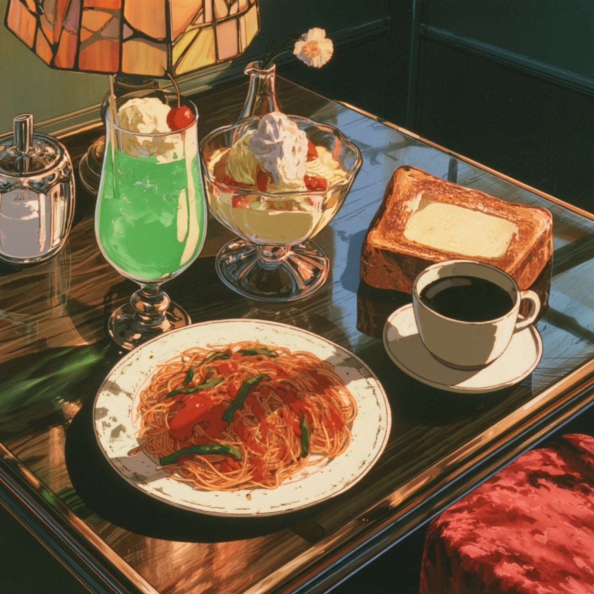
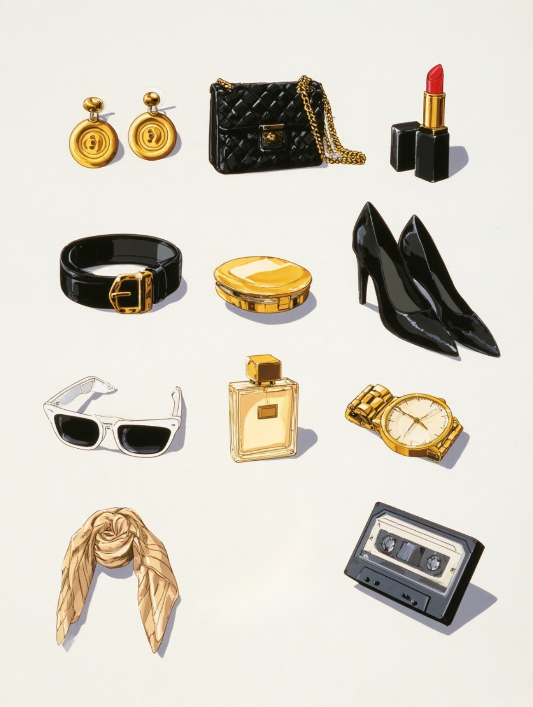
0102030405060708091011열한 가지Catalog
Eleven
Things
도쿄 잡지는 물건을 흰 바탕에 늘어놓고 번호와 값을 붙인다. 화보보다 이 쪽을 먼저 펴 보는 독자도 많다고 한다. 우리도 열한 가지를 골랐다.
- 01금단추 귀걸이¥4,800
- 02누빔 체인 백¥38,000
- 03빨간 립스틱¥2,500
- 04금 버클 와이드 벨트¥6,900
- 05금색 콤팩트¥3,800
- 06검은 펌프스¥16,000
- 07흰 테 선글라스¥5,800
- 08향수 50ml¥9,000
- 09금색 손목시계¥29,000
- 10실크 스카프¥8,500
- 11카세트테이프 46분¥380
재킷 한 벌,
세 번 입기
같은 옷을 요일마다 다르게 입는 법. 도쿄 잡지가 가장 공들이는 코너다. 금단추 남색 재킷 한 벌을 월요일, 금요일, 일요일에 입혔다.
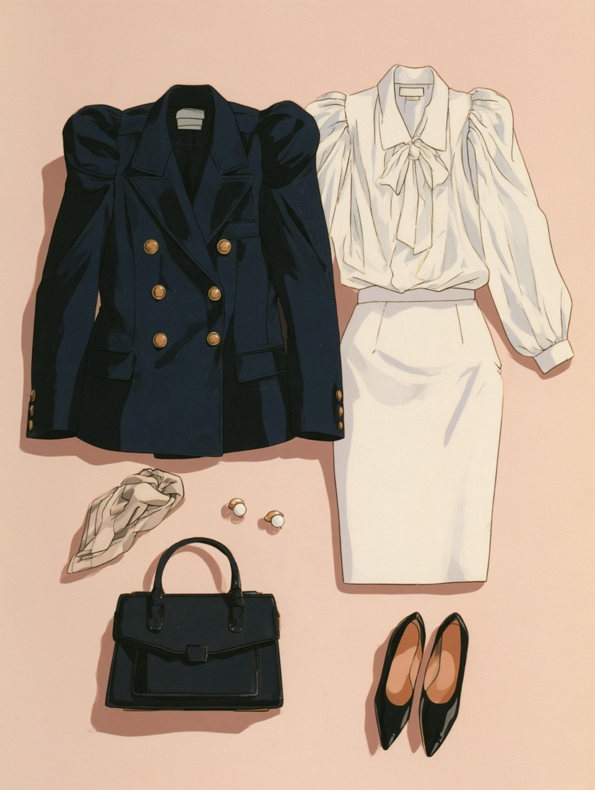
- ★ 금단추 남색 더블 재킷
- 리본을 묶는 흰 실크 블라우스
- 무릎 길이 흰 타이트스커트
- 검은 핸드백, 검은 펌프스
- 진주 귀걸이, 실크 스카프
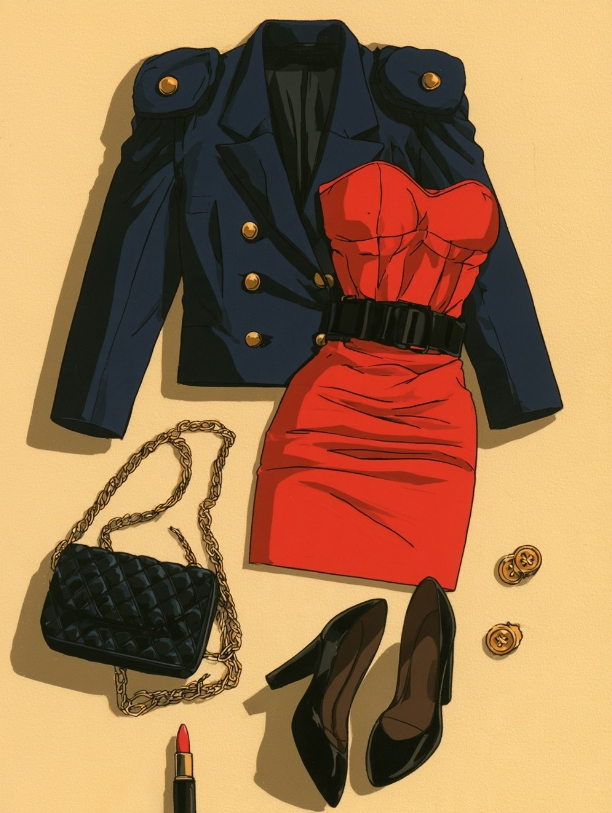
- ★ 금단추 남색 더블 재킷
- 몸에 붙는 빨간 원피스
- 넓은 검은 벨트, 검은 하이힐
- 누빔 체인 백, 금단추 귀걸이
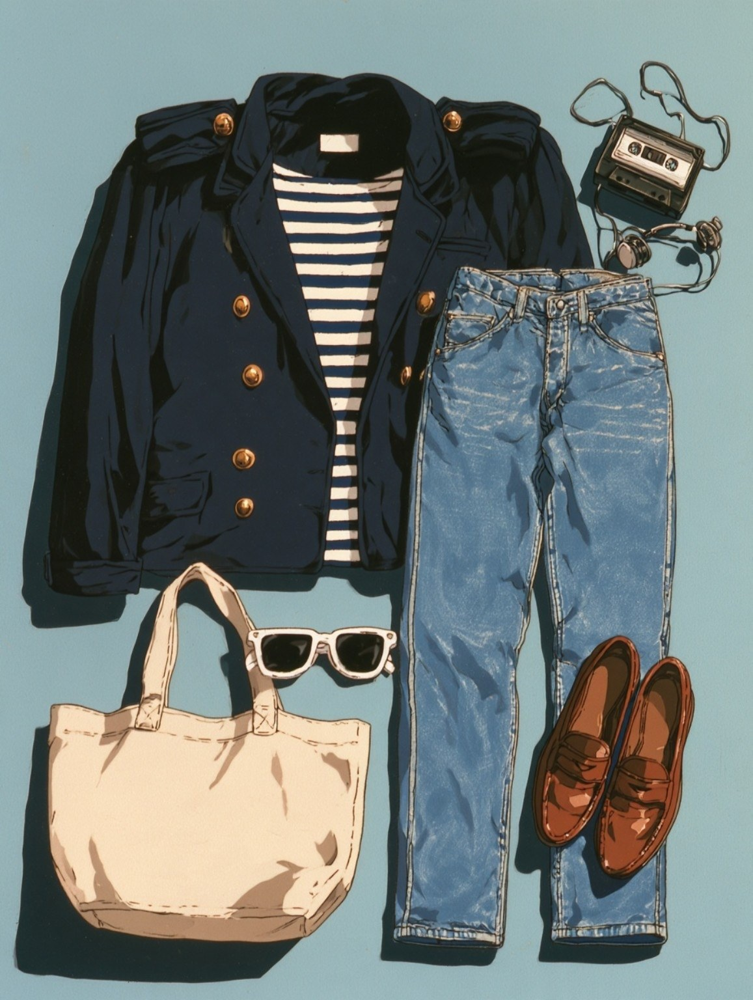
- ★ 금단추 남색 더블 재킷
- 남색 줄무늬 티셔츠
- 일자 청바지, 갈색 로퍼
- 캔버스 가방, 흰 테 선글라스
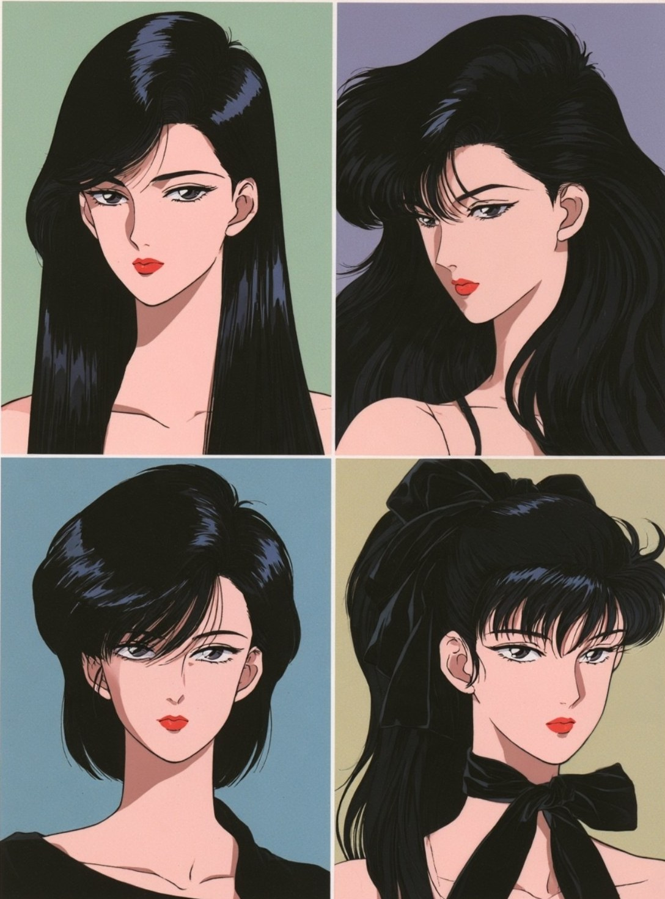
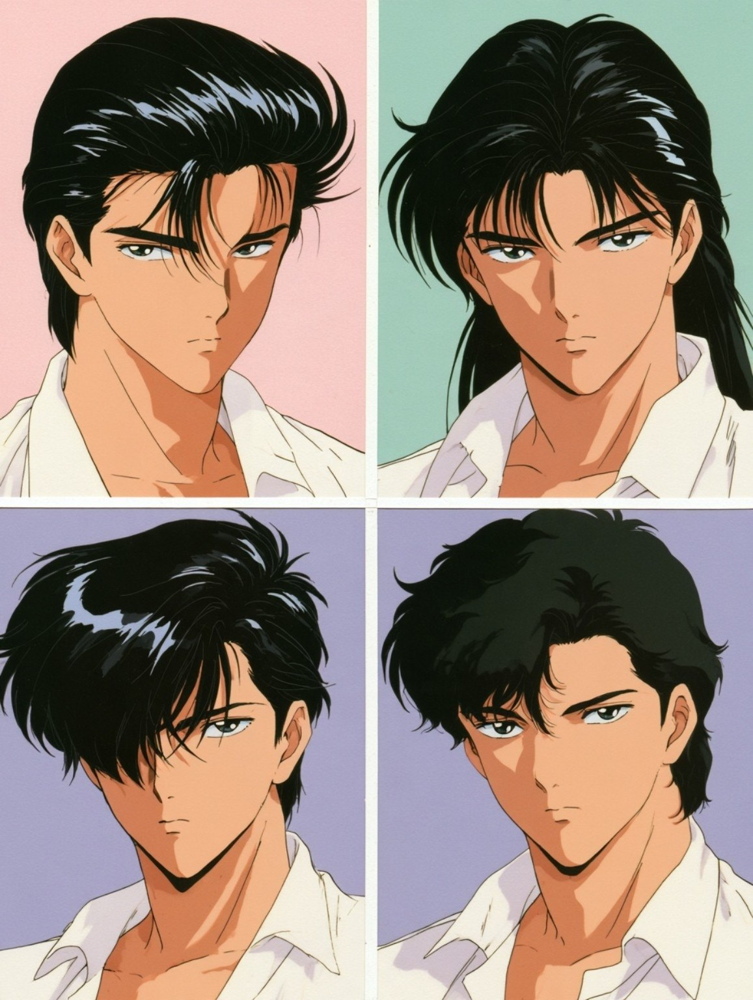
Starsof August
미뤄 둔 전화를 먼저 건다. 받는 쪽도 기다리고 있었다.
LUCKY · 팀 점퍼지갑이 가벼워지는 달. 세 번 입을 옷만 산다.
LUCKY · 금단추 재킷약속이 겹친다. 하나는 낮으로 옮기면 둘 다 지킨다.
LUCKY · 카세트테이프익숙한 가게에서 새 메뉴를 고르면 좋은 일이 생긴다.
LUCKY · 멜론 크림소다생일의 달. 사진은 많이 찍어 둘수록 좋다.
LUCKY · 필름 카메라머리 모양을 바꾸기 좋은 때. 반 뼘만 잘라도 달라진다.
LUCKY · 벨벳 리본고민은 걷는 동안 풀린다. 한 정거장 먼저 내린다.
LUCKY · 흰 운동화검은 옷이 잘 받는 달. 말수는 줄이고 눈으로 말한다.
LUCKY · 은테 안경바다 쪽으로 가면 운이 트인다. 아침 일찍 나선다.
LUCKY · 조개 목걸이야근이 이어진다. 끝나고 먹는 한 그릇이 보상이다.
LUCKY · 트렌치코트새 음악을 만난다. 권해 준 사람에게 고맙다고 전한다.
LUCKY · 헤드폰비 오는 날의 약속이 오래 기억에 남는다.
LUCKY · 비닐우산편집부 앞
지난 호 미래 서울 편을 보고, 허리춤에 다는 작은 기계가 뭔지 식구들과 한참 얘기했습니다. 전화가 오면 울린다는데, 그럼 전화는 어디서 받나요.
서울 마포구 · 독자 K · 스물둘파리 호의 모자를 보고 어머니 장롱을 뒤졌더니 비슷한 것이 나왔습니다. 쓰고 나갈 용기는 아직 없습니다.
부산 동래구 · 독자 P · 열아홉남자 화보를 늘려 달라고 석 달째 엽서를 보냅니다. 이번 호에는 꼭 부탁드립니다.
대구 중구 · 독자 L · 스물넷이번 호 부록 카세트 라벨을 가장 잘 꾸민 독자 세 분께 다음 호를 보내 드립니다. 응모는 엽서로. 이름과 주소를 꼭 적어 주세요.
오려 쓰는
부록
- 점선을 따라 가위로 오린다.
- 세로 점선 두 줄을 접는다.
- 카세트 케이스에 끼우고 노래 제목을 적는다.
Drivefor the morning
Tokyofor the last train
Sodafor a slow afternoon
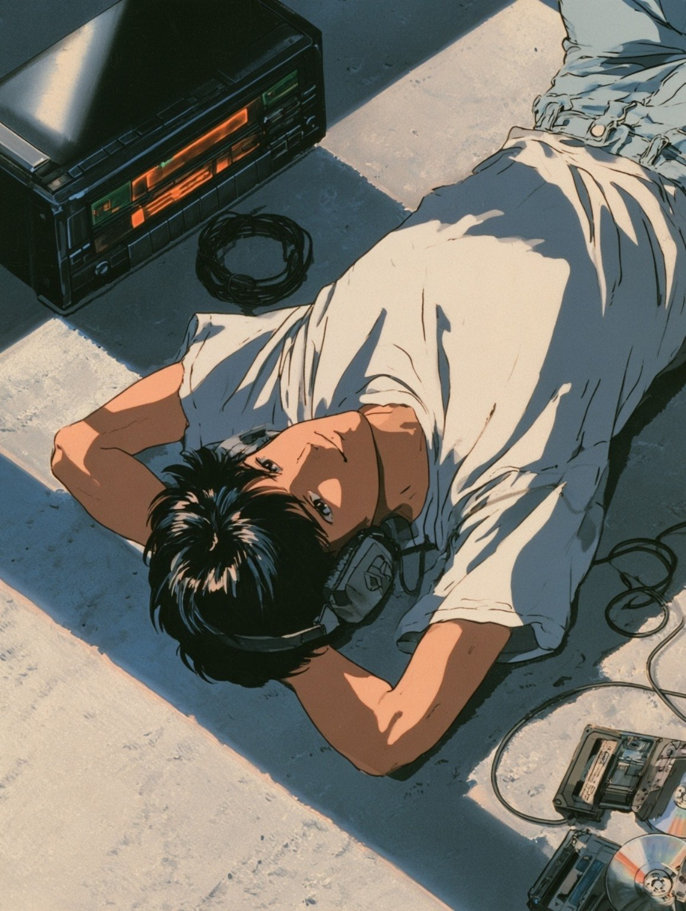
바닥에 누워서 듣는다.
미니 컴포넌트 스테레오.
The Wardrobe
- Issue
- No.06 · 도쿄 특파호
August 1989, printed in Seoul 1985 - Locations
- 초롱 골목 · 자판기 앞 · 심야 전철 · 바닷가 건널목 · 라멘 포장마차 · 시부야 · 킷사텐
- Layout
- 두 쪽을 펼친 잡지 지면. 기울어진 굵은 제목 글씨와 멜론 소다의 초록
- Special pages
- 카탈로그의 값, 별자리 운세, 독자 엽서, 광고 속 상품은 모두 지어낸 것
- Produced by
- Concept, Styling & Art Direction — KIM SOY
Illustrations — AI 생성 이미지
ÉPOQUE의 시간 여행은 다음 호에 계속됩니다.